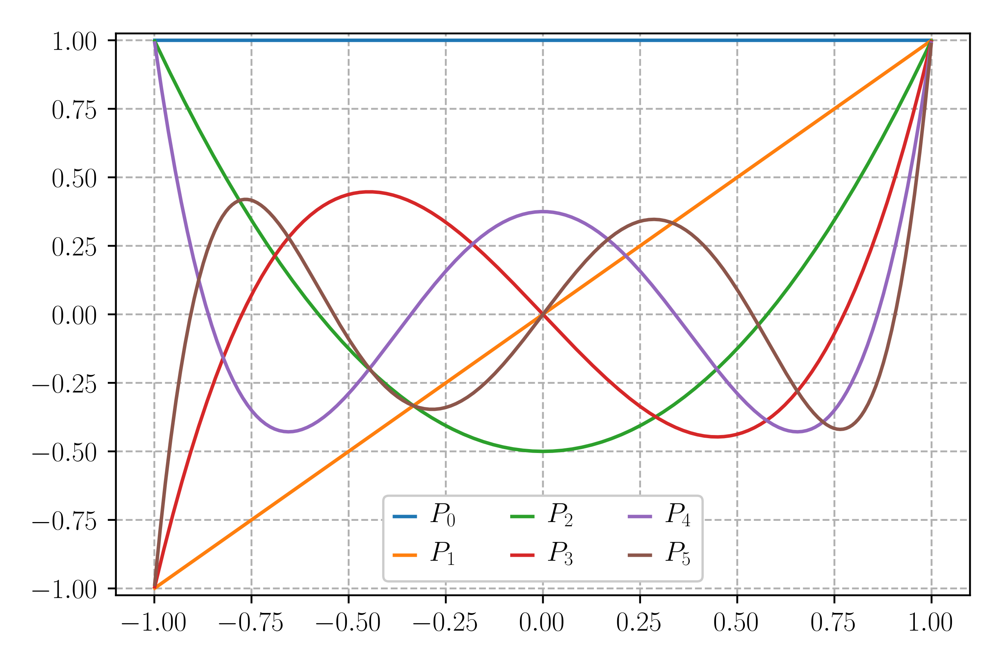

Numerical Integration
Numerical Integration
We discussed an adaptive scheme of evaluating definite integrals numerically.
$$ \begin{align} S_1 &= \frac{1}{2}\left[f(a) + f(b)\right](b - a) \\ S_2 &= \frac{1}{2}S_1 + \frac{1}{2}(b - a)\sum_{i=1}^1 f(x_i) \\ S_3 &= \frac{1}{2}S_2 + \frac{1}{4}(b - a)\sum_{i=1}^2 f(x_i) \\ \dots \end{align} $$Numerical Integration
From the sequence of trapezoidal approximations $S_n$, we can form the Simpson approximations:
$$ S'_n = \frac{4}{3}S_n - \frac{1}{3}S_{n-1} $$which are a lot more accurate than the trapezoidal approximations.
Romberg Integration
Forming $S'_n$ cancels out the approximation error at order $h^2$. Can we do better than this?
Yes. The procedure is a an algorithm called Romberg integration.
Romberg Integration
Let's start by renaming our values in a suggestive way:
Define $R_{n,1} = S_n$, $R_{n, 2} = S'_n$.
$R_{n,1}$ is the trapezoidal approximation to the integral, which has error of order $\varepsilon_{n,1} = O(h_n^2)$.
$R_{n,2}$ is the Simpson approximation to the integral, which has error of order $\varepsilon_{n,2} = O(h_n^4)$.
Romberg Integration
Let's write the last error as $\varepsilon_{n,2} = c_2h_n^4 + O(h_n^6)$. What linear combination do I need to form in order to cancel the 4th order error?
Let $I$ be the exact integral we want to find. Then we can write:
$$ \begin{align} I &= R_{n,2} + c_2h_n^4 + O(h_n^6) = R_{n-1,2} + c_2h_{n-1}^4 + O(h_{n-1}^6) \\ &= R_{n-1,2} + 16c_2h_n^4 + O(h_n^6) \end{align} $$ $$ c_2h_n^4 = \frac{1}{15}(R_{n,2} - R_{n-1,2}) + O(h_n^6) $$This is actually just the 4th order error estimate for Simpson estimation that we discussed last time.
Romberg Integration
Now we can define the higher order version of $R_{n,2}$:
$$ R_{n,3} = R_{n,2} + \frac{1}{15}\left(R_{n,2} - R_{n-1,2}\right) $$You can think of $R_{n,3}$ as a new approximation to the integral that has error of order $\varepsilon_{n,3} = O(h_n^6)$.
The error on $R_{n,3}$ can be estimated as:
$$ \varepsilon_{n,3} = \frac{1}{63}\left(R_{n,3} - R_{n-1,3}\right) + O(h_n^8) $$Romberg Integration
This general procedure can be repeated for up to $n$ times. At any refinement level $n$, the general $R_{n,m}$ is the estimate that is accurate to order $h_n^{2m}$.
$$ R_{n,m+1} = R_{n,m} + \frac{1}{4^m - 1}\left(R_{n,m} - R_{n-1,m}\right) $$The error for this estimate will be:
$$ \varepsilon_{n,m+1} = \frac{1}{4^{m+1} - 1}\left(R_{n,m+1} - R_{n-1,m+1}\right) + O(h_n^{2m+4}) $$Romberg Integration
$$ R_{n,m+1} = R_{n,m} + \frac{1}{4^m - 1}\left(R_{n,m} - R_{n-1,m}\right) $$
Romberg Integration
Romberg integration is an example of a more general idea called Richardson extrapolation. The idea is to extrapolate existing low-order estimates to construct higher order estimates of the target result.
We will encounter Richardson extrapolation again when dealing with ODEs.
Gauss Quadrature
Gauss Quadrature
So far, we have restricted our integral estimates on evenly spaced $\{x_i\}$. This set of integration rules are collectively called Newton-Cotes formulae.
If we are allowed to play with the spacing between points $x_i$ where the functions is evaluated, we can potentially achieve much faster convergence. The points $x_i$ are called abscissas.
Gauss Quadrature
Given a set of abscissas $x_i$ and weights $w_i$, the integral can be approximated as:
$$ \int_a^b f(x)\,dx \approx \sum_{i=0}^{n-1} w_i f(x_i) $$The nontrivial problem is to locate $x_i$ and calculate $w_i$.
Gauss Quadrature
The classical Gauss-Legendre case uses roots of the $n$th Legendre polynomial $P_n(x)$ for the abscissas $x_i$.
$$ \int_{-1}^1 f(x)\,dx \approx \sum_{i=0}^{n-1} w_i f(x_i) $$where $x_i$ are the $n$ solutions of $P_n(x) = 0$.
Gauss Quadrature
Gauss Quadrature
The Gauss-Legendre weights are defined to be:
$$ w_i = \frac{2}{(1 - x_i^2)[P'_n(x_i)]^2} $$where $P'_n(x_i)$ is the first derivative of $P_n(x)$ evaluated at the abscissas $x_i$.
Gauss Quadrature
Weights and abscissas for $N=10$ Gauss-Legendre quadrature:

Gauss Quadrature
Weights and abscissas for $N=10$ Gauss-Legendre quadrature:
- $x_0 = -0.9739065285171717, \quad w_0 = 0.0666713443086881$
- $x_1 = -0.8650633666889845, \quad w_1 = 0.1494513491505806$
- $x_2 = -0.6794095682990244, \quad w_2 = 0.2190863625159821$
- $x_3 = -0.4333953941292472, \quad w_3 = 0.2692667193099963$
- $x_4 = -0.1488743389816312, \quad w_4 = 0.2955242247147529$
- $x_5 = -x_4, \quad w_5 = w_4$
- $x_6 = -x_3, \quad w_6 = w_3$
- $x_7 = -x_2, \quad w_7 = w_2$
- $x_8 = -x_1, \quad w_8 = w_1$
- $x_9 = -x_0, \quad w_9 = w_0$
Gauss Quadrature
Note that Gauss-Legendre quadrature formula works on the interval $[-1, 1]$. For an arbitrary interval $[a, b]$, you will need to map $x$ to $[-1, 1]$:
$$ x = \frac{1}{2}(b - a)x' + \frac{1}{2}(b + a) $$So that:
$$ \int_a^b f(x)\,dx = \frac{1}{2}(b - a)\int_{-1}^1 f(x')\,dx' \approx \frac{1}{2}(b - a)\sum_{i=0}^{n-1}w_i f(x'_i) $$Gauss Quadrature
Why does Gauss quadrature work?
In essence, Gauss quadrature is using a degree $2n - 1$ polynomial to approximate the function $f(x)$. For any $f(x)$ that can be written as a polynomial of order $<2n - 1$, Gauss quadrature gives the exact value.
Gauss Quadrature
$x_i$ are chosen to be the roots of a series of orthogonal polynomials $p_n(x)$. Orthogonal means $\int_a^b p_n(x)p_m(x) = 0$ if $n\neq m$. Legendre polynomials are orthogonal.
We approximate our function $f(x)$ as an order $2n - 1$ polynomial:
$$ f(x) \approx p_n(x)q(x) + r(x) $$where $q(x)$ and $r(x)$ are polynomials of order $n - 1$. Since $p_n(x)$ is orthogonal to all $p_m(x)$ where $m < n$, and $q(x)$ can be written as combinations of $p_m(x)$, the integral:
$$ \int_a^b f(x)\,dx \approx \int_a^b [p_n(x)q(x) + r(x)]\,dx = \int_a^b r(x)\,dx $$Gauss Quadrature
Furthermore, if $x_i$ are roots of $p_n(x)$, then we have
$$ f(x_i) \approx p_n(x_i)q(x_i) + r(x_i) = r(x_i) $$Gauss Quadrature
Given $n$ and $x_i$, we can form the so-called Lagrange interpolation polynomials:
$$ \ell_i(x) = \prod_{\substack{m=0\dots n-1 \\ m\neq i}}\frac{(x - x_m)}{(x_i - x_m)} $$These polynomial have order $n - 1$, and have the property that $\ell_i(x_k) = \delta_{ik}$. We can write $r(x)$ as such an interpolation polynomial:
$$ r(x) = \sum_{i=0}^{n-1}r(x_i)\ell_i(x),\quad r(x_k) = \sum_{i=0}^{n-1}r(x_i)\delta_{ik} = r(x_i) $$This is a unique representation of $r(x)$.
Gauss Quadrature
Now we can write the Gauss quadrature as:
$$ \int_a^b f(x)\,dx \approx \int_a^b [p_n(x)q(x) + r(x)]\,dx = \int_a^b \sum_{i=0}^{n-1}r(x_i)\ell_i(x)\,dx $$Remember that $f(x_i) \approx r(x_i)$. Therefore we have:
$$ \int_a^b f(x)\,dx \approx \sum_{i=0}^{n-1}f(x_i)\int_a^b\ell_i(x)\,dx = \sum_{i=0}^{n-1}w_if(x_i) $$This approximation becomes exact if $f(x)$ is a polynomial of order $<2n - 1$.